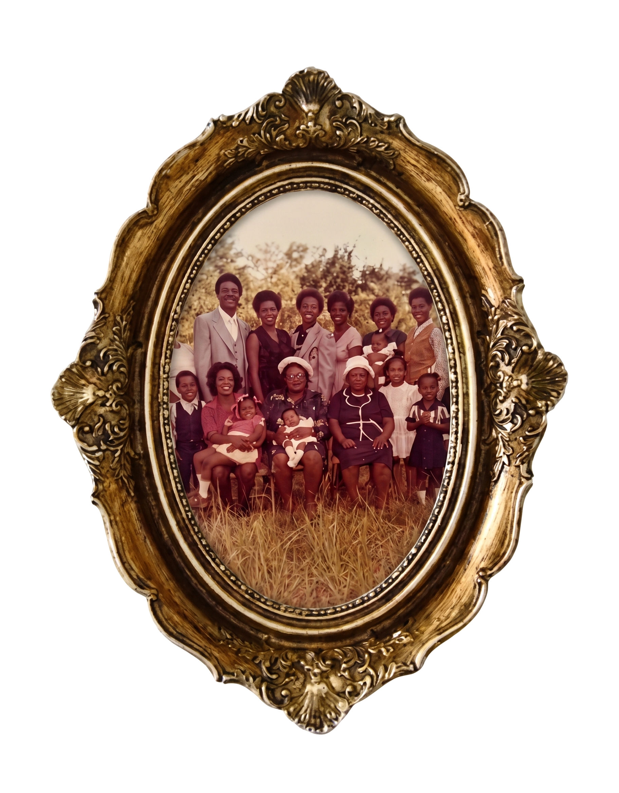

Welcome to the Foreword. I am Tyronne Jacques, and it is my profound honor to present this project as my personal gift to the Robertson Family Reunion Committee. I truly hope my family enjoys experiencing this research project to document the Robertson family of Rosedale, LA. This project is a labor of love, a bridge between our past and our future, and it all begins with the woman who planted the seeds of our magnificent legacy: our beloved Magnolia “Big Ma” Robertson.
Born to the late Mary and Charles Robertson on July 5, 1894, in Rosedale, LA, Magnolia’s life was a testament to strength, love, and enduring roots. She was united in marriage to the late Lamar Robertson (son of the late Raymond and Lydia Robertson), and from that beautiful union, nine extraordinary children were born — seven daughters and two sons who would go on to shape the very fabric of our family.
To understand Big Ma is to understand the gravity of her love and the absolute reverence we held for her. Whenever Big Ma traveled from the country down to New Orleans, it was truly as if the Queen of England had arrived. The preparations for her visits were epic: the endless to-do lists, the meticulous shopping, and the palpable joy that filled the air. She would spend time staying overnight at the home of each of her children in the city, but no matter whose house she was sleeping at, the entire New Orleans family would gather there, full and festive. It was an annual royal progression until she was no longer able to make the trip — and when that day came, New Orleans simply packed up and went to her.
Her capacity for love knew no bounds or age limits. Well into her 80s, she stepped up to serve as a full-time guardian for grandchildren who needed extra attention and a safe harbor, giving them the unconditional love only she could provide. Even in her 90s, she remained an unstoppable force of nature. She maintained a year-round garden, insisting on turning over the dirt herself because she preferred it done her way. At the ripe age of 94, she was still harvesting her crops only to turn around and replant the soil.
Perhaps most remarkably, her mind was a steel trap of family lineage. She knew the name of every single grandchild and great-grandchild — and I proudly count myself among that number. She never missed a beat, never forgot an association, and always knew exactly which grandchild belonged to which one of her children.
Big Ma and Lamar were blessed with nine children, who built the foundation of our vast family tree:
The First Generational Moment: Leaving the Nest. As the children grew, the Robertson legacy expanded out into the world, marking our first great generational moment as Big Ma’s daughters stepped into marriage:
When we set out to document these incredible lives for our family reunion, we made a conscious decision: this research was not going to read like an obituary. Although Aunt Susianna is the only surviving sibling of that original first generation, the spirits, stories, and impact of her brothers and sisters are vibrantly alive. We approached this with the lens of a documentary — capturing the essence, the humor, the grit, and the grace of our ancestors.
However, what you are reading today is only Phase One.
At the time of earlier handwritten records, Big Ma and Lamar’s legacy boasted 57 grandchildren, 144 great-grandchildren, and 30 great-great-grandchildren. Today, those numbers have exploded into endless layers of beautiful generations.
To honor that continued growth, I am thrilled to announce that my company, Beryl AI Labs (berylize.com), will be maintaining and scaling this site into an official, state-of-the-art ancestry platform for the Robertson family: THE MAGNOLIA ROBERTSON PROJECT.
This will become our very own, private version of Ancestry.com. In Phase Two, this platform will include complete family documentation of both the deceased and the surviving. Powered by the latest in research and knowledge graphing intelligence, the site will feature:
Most importantly, this site is being developed as an active ancestry archive. We are building personalized knowledge graphs for each sibling’s branch, meaning you — the family — will have the ability to actively update your own family trees directly.
Big Ma planted the garden, and now, we are ensuring that the roots she established will be digitally preserved, celebrated, and expanded for every generation to come. Welcome to our history. Welcome home.
To everyone in attendance here at the Family Reunion in New Orleans 2026, and to all of those watching and celebrating with us via stream — I want to give you a massive, heartfelt welcome. May we continue to reconnect and remain united as the grandkids of Lemar and Magnolia Robertson.
Happy Robertson Family Reunion 2026!
If you would like to be a part of THE MAGNOLIA ROBERTSON PROJECT, contact me at:
